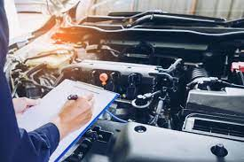

Sobre Peças
Peças de carro são os elementos fundamentais que garantem o funcionamento adequado e a segurança do veículo. Desde o motor até os sistemas de suspensão e freios, cada componente desempenha um papel crucial. O motor, sistema de suspensão e direção proporcionam desempenho e conforto, enquanto os freios asseguram a capacidade de parada controlada. Manter essas peças em bom estado é essencial para a durabilidade e segurança do veículo, exigindo revisões regulares e substituição de peças desgastadas.
Peças Disponiveis
Motores: Gasolina, diesel, elétrico e híbrido.
Imagem
